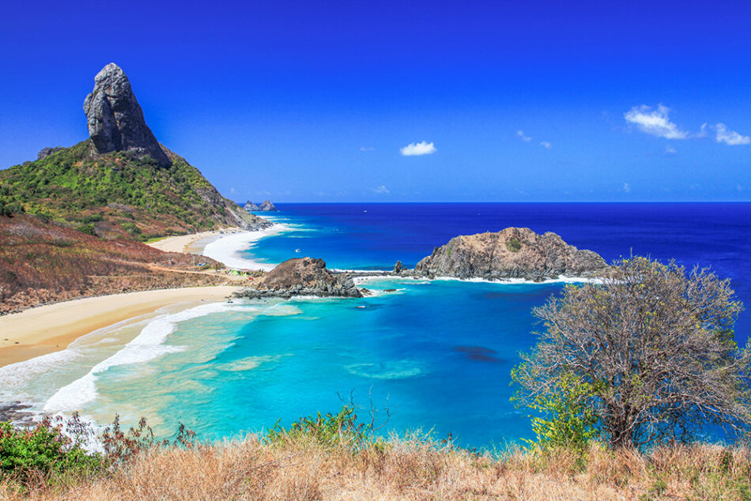
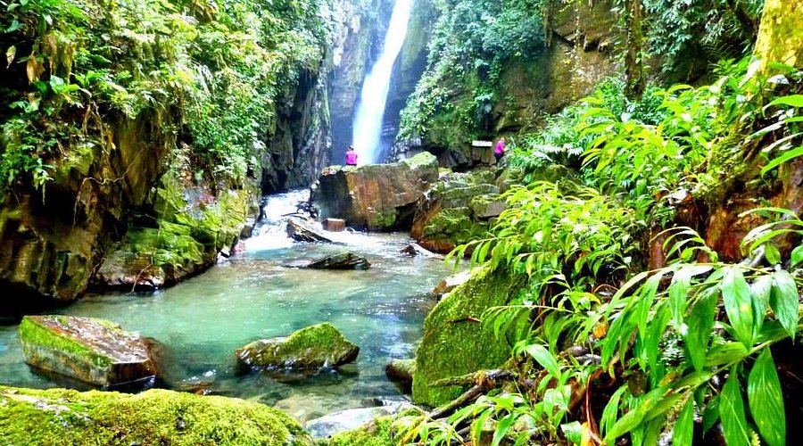

Lençóis Maranhenses
Os Lençóis Maranhenses são um paraíso natural no Brasil, famosos por suas dunas de areia branca e lagoas cristalinas que se formam na época de chuvas. Localizado no Parque Nacional dos Lençóis Maranhenses, o destino encanta pela paisagem única e pelas águas azul-esverdeadas perfeitas para banho. A principal base para visitação é Barreirinhas.

Fernando de Noronha
Fernando de Noronha é um arquipélago paradisíaco conhecido por suas praias de águas cristalinas, rica vida marinha e paisagens preservadas. Localizado no Brasil, o destino é perfeito para mergulho, onde é comum avistar golfinhos, tartarugas e peixes coloridos. Com acesso controlado para preservação ambiental, Noronha oferece uma experiência exclusiva em meio à natureza.
PETAR
O PETAR é um dos destinos mais impressionantes de ecoturismo do Brasil. Famoso por suas cavernas, trilhas e cachoeiras, o parque abriga uma rica biodiversidade e formações naturais únicas. Ideal para quem busca aventura, oferece atividades como espeleologia, caminhadas e contato direto com a natureza preservada.

Amazônia
A Amazônia é a maior floresta tropical do mundo, conhecida por sua imensa biodiversidade e paisagens exuberantes. Presente em grande parte do Brasil, abriga rios grandiosos como o Rio Amazonas, além de uma rica variedade de fauna e flora. É um destino ideal para quem busca contato profundo com a natureza e experiências únicas na selva.

Pedras de Catimbau
O Vale do Catimbau, conhecido por suas impressionantes formações rochosas — as “pedras de Catimbau” — é um dos cenários mais fascinantes do Brasil. Com cânions, grutas e pinturas rupestres, o local combina beleza natural e riqueza histórica. Ideal para trilhas e contemplação, oferece uma experiência única em meio ao sertão pernambucano.

Canela - RS
Canela é um charmoso destino na serra gaúcha, conhecido por seu clima aconchegante e belas paisagens naturais. Próxima a Gramado, a cidade encanta com atrações como a Catedral de Pedra e o Parque do Caracol, onde está a famosa Cascata do Caracol. Ideal para quem busca tranquilidade, gastronomia e contato com a natureza.